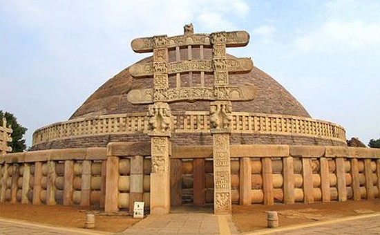

Taj Mahal , Agra

Mahabalipuram, Tamil Nadu

Sanchi Stupa, Madhya Pradesh
Complexe Du Capitole, Chandigarh

Red Fort, Delhi

Hampi, Karnataka

Chhatrapati Shivaji Maharaj Terminal, Mumbai

Sunderban National Park, West Bengal
Qutub Minar, Delhi

Church Of St Francis Of Assisi, Goa
Bodh Gaya (Cradle Of Buddhism), Bihar
Keoladeo National Park, Rajasthan
Fatehpur Sikri, Agra

Thanjavur, Tamil Nadu (popularly called Tajore).
Victorian Gothic And Art Deco, Mumbai
Khangchendzonga National Park, Sikkim

Konark Sun Temple, Odisha
Khajuraho Group Of Monuments
Ellora Caves, Maharashtra
Valley Of Flowers and Nanda Devi National Park, Uttarakhand
Humayun Tomb, Delhi
Hill Palaces of Rajasthan

Agra Fort, Agra

Kaziranga National Park, Assam